36B / SELECTED EDITION D
우드와 유리, D안.
긴 식탁은 밝고 가볍게, 수납장은 따뜻한 꿀빛으로.
니켈과 유리 조명이 나무 가구 사이에 여백을 만들어요.
D안 3D 둘러보기 →이 조합을 고른 이유
리사보 200cm 식탁과 의자는 얇은 선으로 큰 면적의 부담을 줄입니다. 리브 수납장 위에는 검정 TEAC·MR3를 놓고, 베리스훌트·그란훌트 선반은 하단을 130cm로 올렸어요. 창가의 화이트 책상과 책상 스탠드는 보유품을 유지하고, 탄 가죽 알레피엘을 더했습니다. 책상 위쪽에는 기존 오렌지 펜던트를 복원했어요. 식탁 위 MARIO와 입구 VARMBLIXT 오렌지 무드등은 뺐습니다. 화장대는 깊이33cm 리베, 협탁은 높이50cm 베르로 맞췄어요.
핵심 가구는 판매 규격과 외형을 반영한 개략 3D입니다. 소재·색감은 실제 제품 및 조명과 차이가 있으며 작은 생활용품과 가전은 기존 개략 모델을 유지합니다. 기존 A·B·C안도 그대로 비교할 수 있어요.
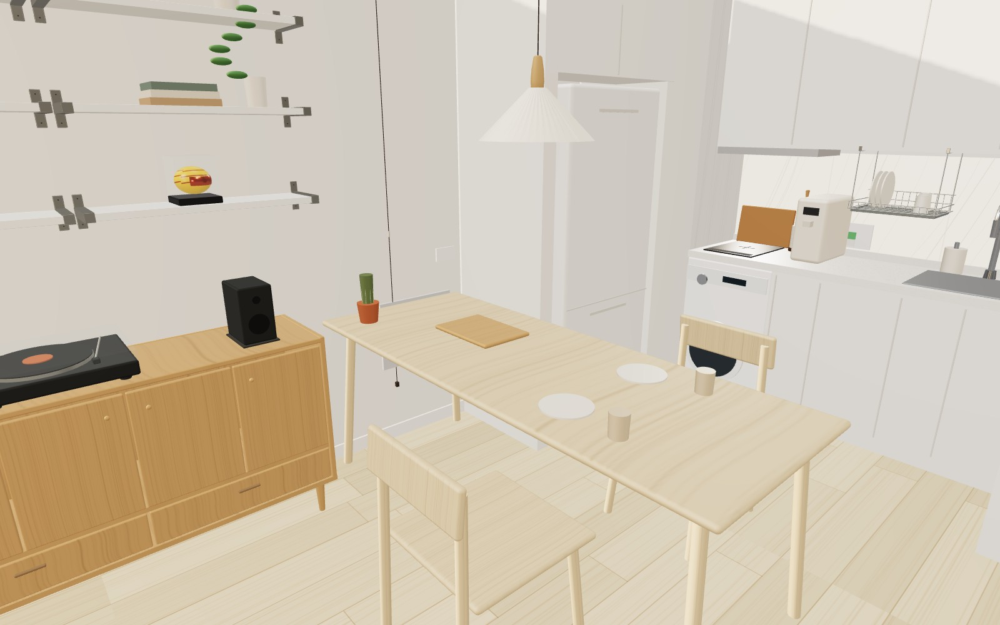
200×78 식탁 · 재료 손질과 마주 앉는 식사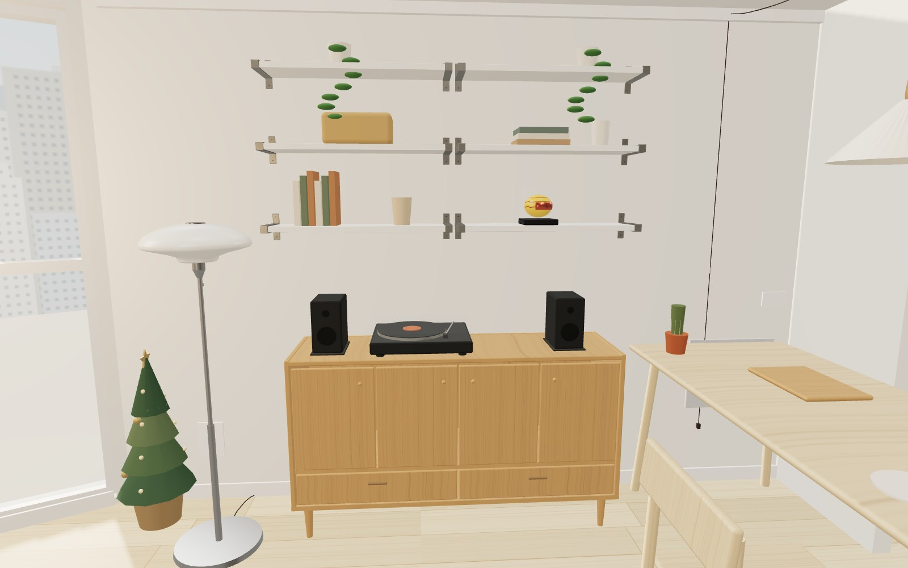
리브 내추럴 · 화이트 선반·니켈 브래킷 · 블랙 오디오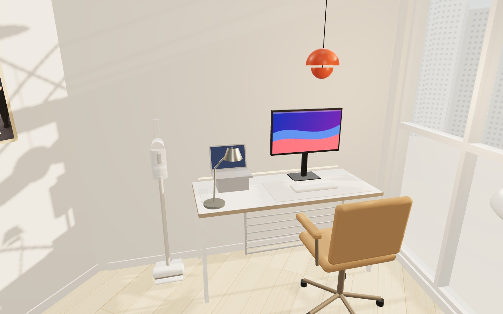
보유 책상·스탠드 · 알레피엘 · 상부 오렌지 펜던트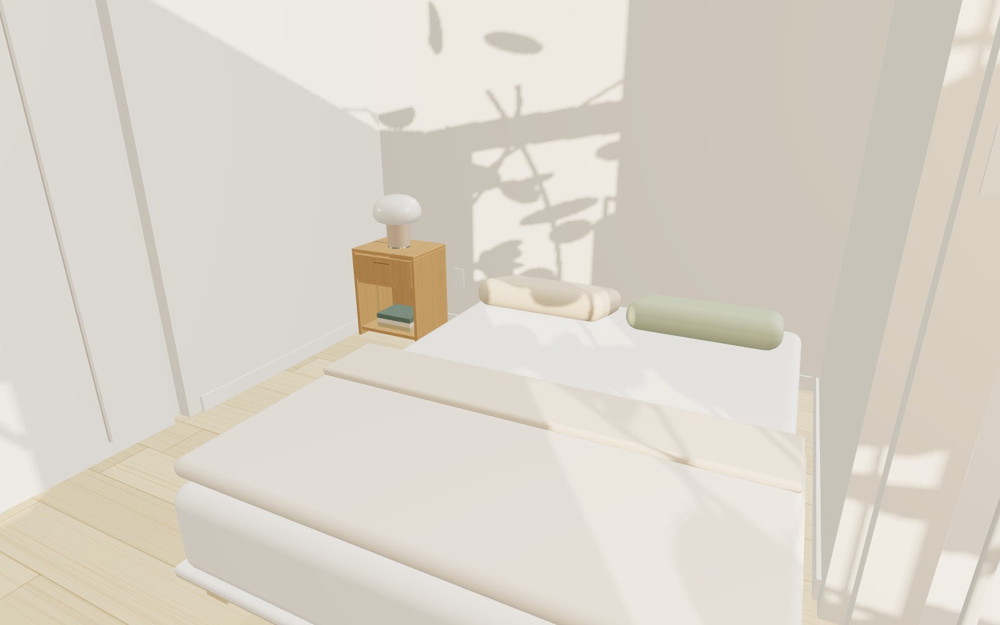
낮은 침대 · 베르 협탁 · 데이사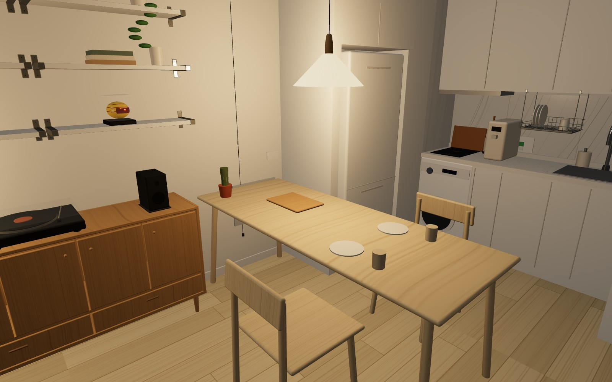
밤 · 텔뷘과 플리츠 조명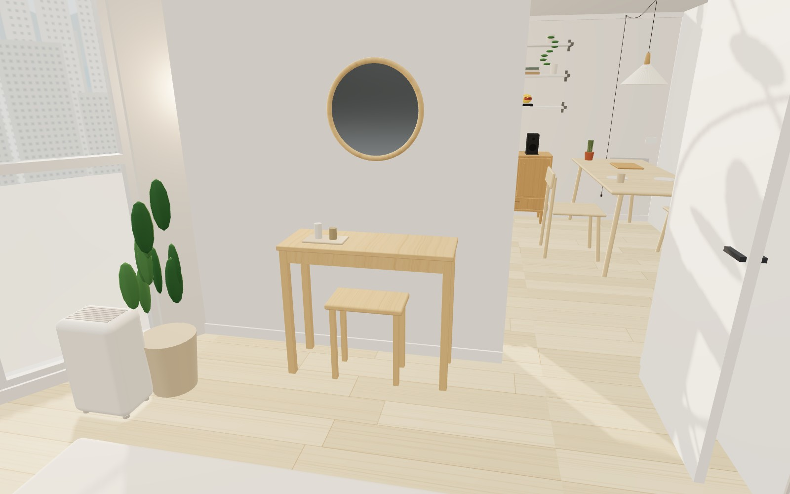
리베 슬림 콘솔 · 원목 거울 · 하제 스툴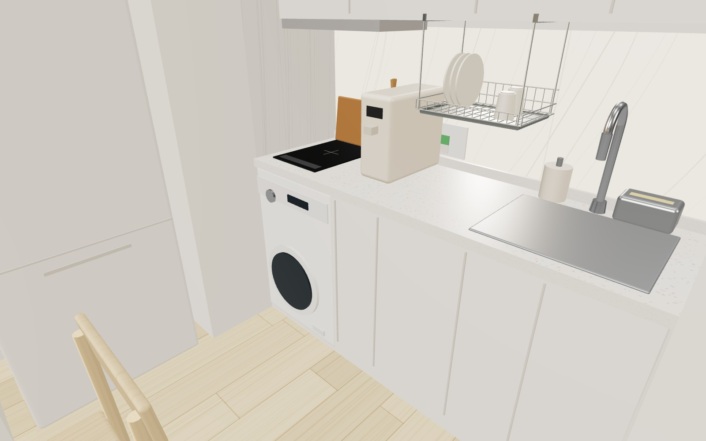
주방 · 조리대 위 건조대 대신 상부장 아래40cm 행잉형무표 행잉 건조대는40×26.5×32.5cm, 분리 물받이 포함 제품입니다. 정수기와 수전 사이에 배치했습니다. 본체304·물받이20계열 스테인리스이며,20mm 끼움부에 맞는 상부장 판 두께와 문 닫힘 확인이 필요합니다. 헐거우면 보조 나사 고정이 필요할 수 있으므로 무타공 설치를 확정하지 않았습니다. 3D는 배치 검토용입니다.
구매 계획 소계 · 펜던트 비용 별도
4,676,200원상품 3,902,400 + 확인된 배송 54,800 + 비데 설치 20,000 + 큐커 계획 399,000 + 예비비 300,000원.
냉장고·매트리스·무선청소기 본체 별도. 보유 책상·책상 스탠드·헬멧·옷행거는 구매하지 않아요. 복원한 책상 상부 오렌지 펜던트의 제품·배송·설치비는 미정으로 위 소계에서 제외했습니다. 보유 스탠드의 실제 모델명도 확인되지 않았습니다. 휴대용 인덕션 모델과 비용은 미정입니다. 예비비에는 세제 2종 임시30,000원과 미확정 배송·전구·설치 소품 등을 포함했으며 확정 견적은 아닙니다. 러그·좌탁·방석은 예산에 포함하되 3D에서는 기존처럼 기본 숨김입니다.
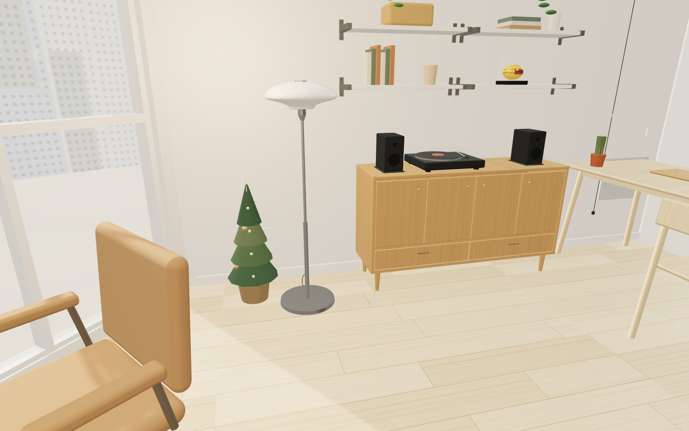
컴퓨터 의자 뒤 · 텔뷘 장스탠드 아래쪽 바닥에 높이 약80cm 트리복도 분리수거통은 D안에서 제외했습니다. 트리는 책상 위에서 빼고 컴퓨터 의자 뒤 장스탠드 아래쪽 바닥에 높이 약80cm·폭32cm로 놓았습니다. 구매 제품·가격은 미정으로 위 소계에 포함하지 않았습니다.
침실 행거
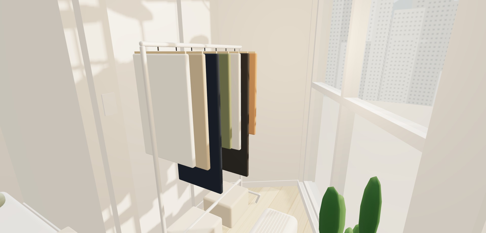
3D의 행거 버튼으로 보기 ↗보유 행거는 보일러실 벽 쪽으로 붙여 침대와 직각으로 놓았습니다. 문 앞을 차지하므로 보일러실 출입 때 행거를 옮기는 조건의 배치입니다. 제습기는 창가 쪽으로 이동했습니다. 침실 거울은 원래 붙박이장 문에 붙이는 방식으로 되돌렸습니다. 침실과 현관 신발장에 각각4장씩, 총8장 구성입니다.
크기와 사용 조건
선반은 BERGSHULT 80×20cm 6장과 GRANHULT 브래킷 12개(2개입 6팩) 구성입니다. 판 폭 합계160cm이며 3D에서는 두 열 사이3cm 여백을 뒀습니다. 실제 브래킷·고정 위치를 포함한 설치 폭은 현장에서 확인해야 합니다. 벽 타공이 필요하므로 임대인·관리사무소에 허용 여부와 퇴거 시 보수 기준을 확인한 후 구매하세요. 접착식으로 대체하지 않습니다.
- 식탁 동쪽의 기본 통로는 도면상 약89cm. 의자를 빼거나 문을 열었을 때의 모든 유효 폭을 뜻하지 않습니다. 좌식 세트를 펼치면 남쪽 식탁 의자를 뒤로 크게 당기기 어려워요.
- 선반 하단130cm − 수납장80cm − TEAC 열린 높이35.6cm = 이론상14.4cm. 수납장 상판 턱 안쪽 깊이, 배선 여유, 실제 벽 고정은 주문 전 확인해야 합니다. LP는 아래 얕은 서랍이 아니라 선반을 뺀 위쪽 여닫이 칸의 후보이며 유효 깊이는 미확정입니다.
- 휴대용 인덕션은 선택 전이라 3D에 넣지 않았습니다. 식탁 제조사의 열기기 조건과 기기 설명서의 설치면·흡배기·전원 조건을 함께 확인한 뒤 배치합니다.
- 큐커399,000원은 구매 계획 항목입니다. 기존 칸은 설명서 이격을 충족하지 않아 설치 위치 해결 전 구매를 확정하지 않습니다.
- 텔뷘·데이사·식탁 플리츠는 플러그형입니다. 복원한 책상 상부 오렌지 펜던트의 과거 후보 VP10은 천장 직결형이며, 플러그 완제품은 확인되지 않았습니다. 실제 구매·전기 연결 방법은 아직 미정입니다. 식탁 펜던트·선반의 고정과 전원선 경로도 현장 확인이 필요합니다.
- DVALA 커버는 매트리스 두께26cm 이하 기준입니다. 매트리스 본체는 별도 선정하며 기존 3D 침대 두께는27cm 개략 모델입니다.
대표 제품 15개
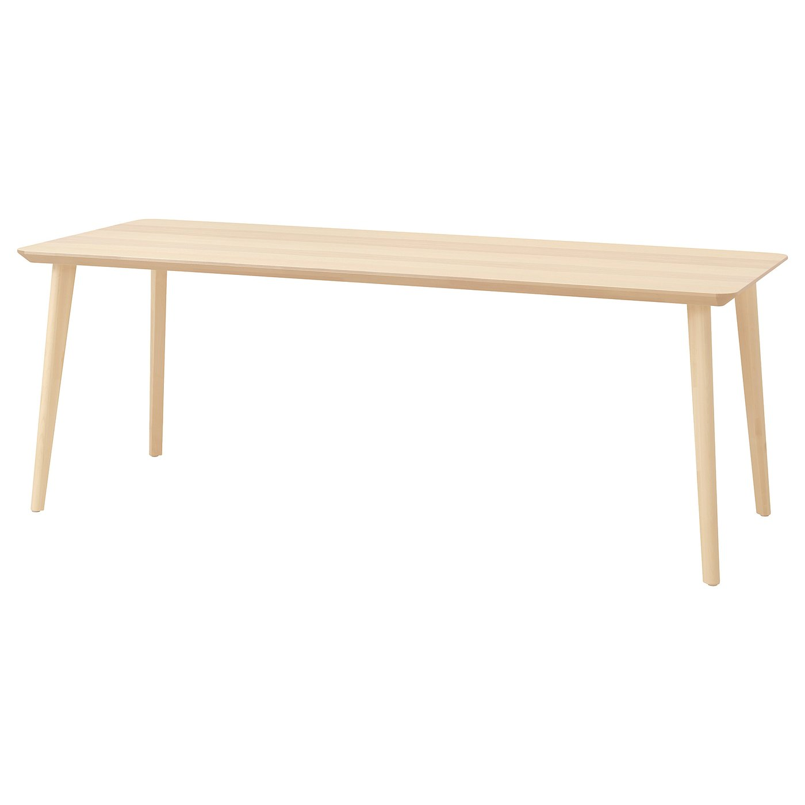
IKEA LISABO 리사보 200
물푸레무늬목 · 200×78×74cm · 테이블 단품
349,000원기존 140cm 리사보보다 작업 면이 길고, 얇은 상판과 벌어진 다리가 가볍게 보인다. 밝은 나뭇결을 유지하면서 35만원 안쪽으로 길이를 확보하는 후보.
제품 상세 ↗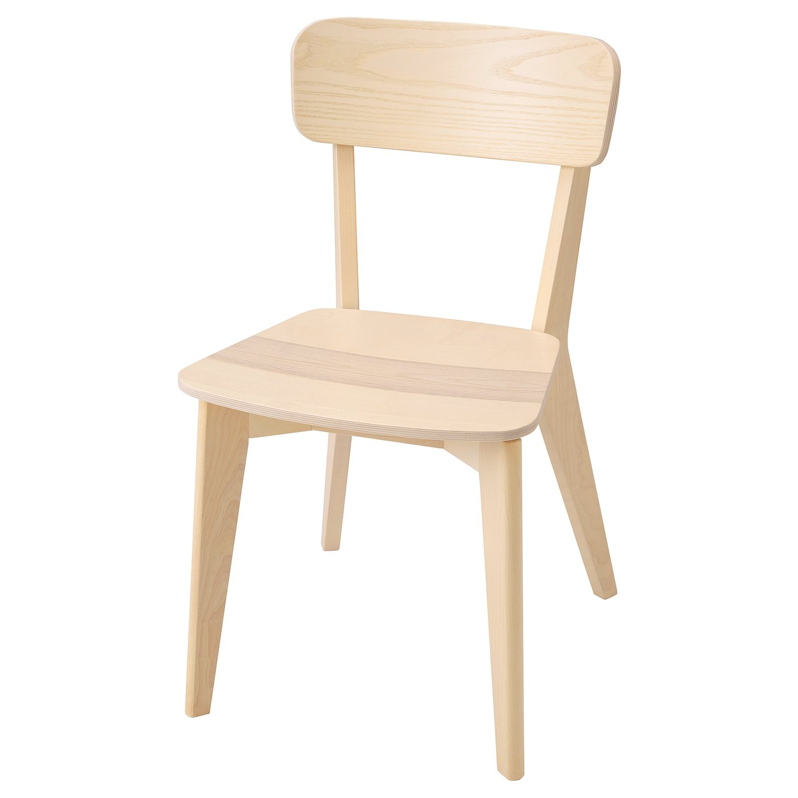
IKEA LISABO 리사보 의자
물푸레나무 / 804.572.36
159,800원밝은 우드, 넓은 등받이와 사선다리
제품 상세 ↗
장미맨숀 리브 원목 사이드보드 01
1400 / 내추럴
406,000원꿀빛 내추럴 원목, 둥근 손잡이와 가는 다리가 빈티지 분위기를 만듭니다. 폭140cm를 유지하면서 작은 소품은 서랍에 넣고, LP는 선반을 뺀 문 수납을 검토하는 구성이에요.
제품 상세 ↗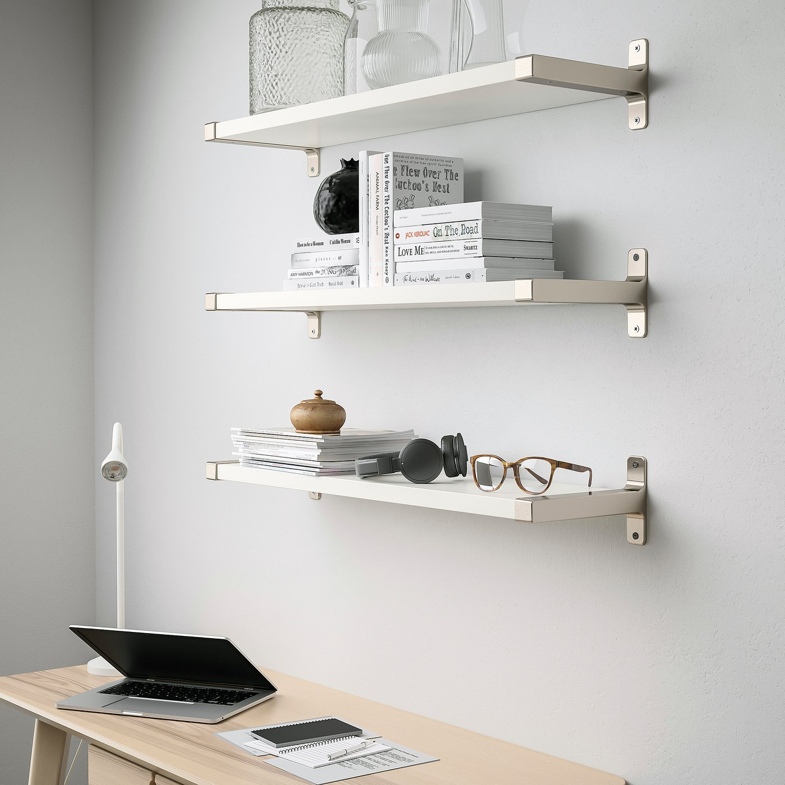
IKEA BERGSHULT / GRANHULT 2열3단
화이트 선반80×20cm 6장 + 니켈도금 브래킷2개입 6팩(총12개)
155,400원화이트 선반과 짧은 니켈 지지대가 아래 우드 LP장과 어울리는 구성입니다. 스트링의 사다리 옆판 대신 벽의 여백을 남기고2열3단 규모와 깊이20cm를 유지합니다.
제품 상세 ↗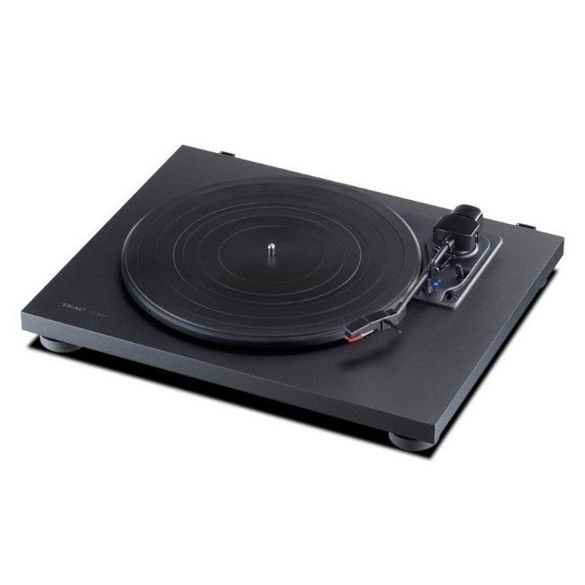
TEAC TN-180BT
TN-180BT Black
320,000원흰 책상과 목재 가구 사이에 얇은 검정 포인트. 기존 TN-180BT와 같은 모델의 색상 대안으로, 종료 시 바늘이 자동으로 돌아와 관리가 편합니다.
제품 상세 ↗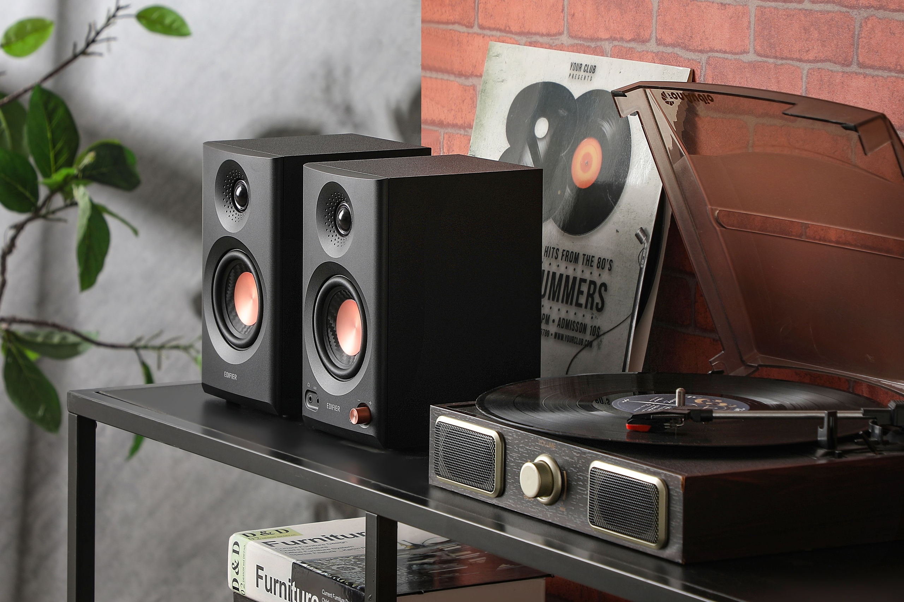
Edifier MR3 국내 정발
블랙
109,000원작은 검정 몸체에 구리색 중앙과 노브가 포인트를 줍니다. 목재·크롬 소품과 연결하기 좋고, 기존 화이트 모델과 가격은 같습니다.
제품 상세 ↗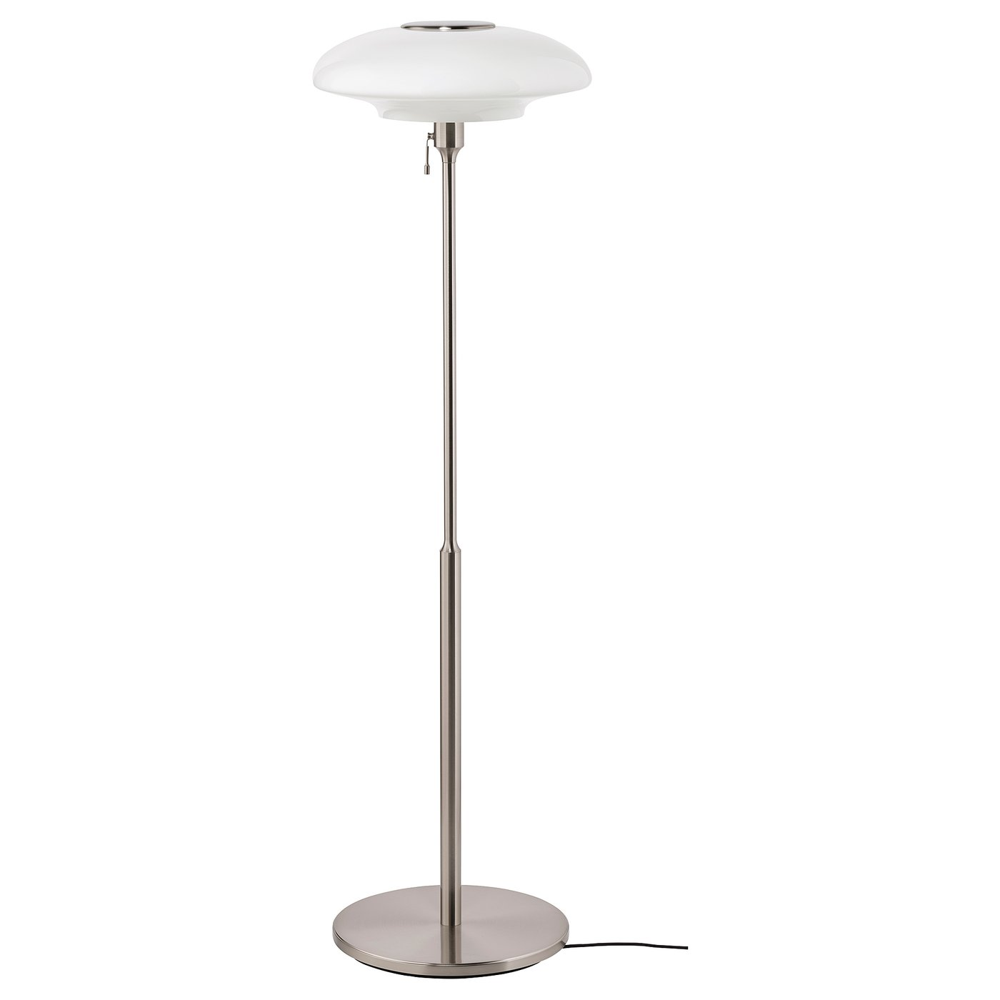
IKEA TÄLLBYN 텔뷘 플로어스탠드
니켈 도금 / 오팔 화이트 유리
149,000원우드 가구 옆에 가느다란 금속 기둥과 유백 유리를 섞는 대안. 패브릭 갓만 반복하지 않으면서 따뜻한 전구빛을 부드럽게 퍼뜨립니다. 받침 지름35cm라 라우테르스의 넓은 삼각 다리보다 배치하기 수월합니다.
제품 상세 ↗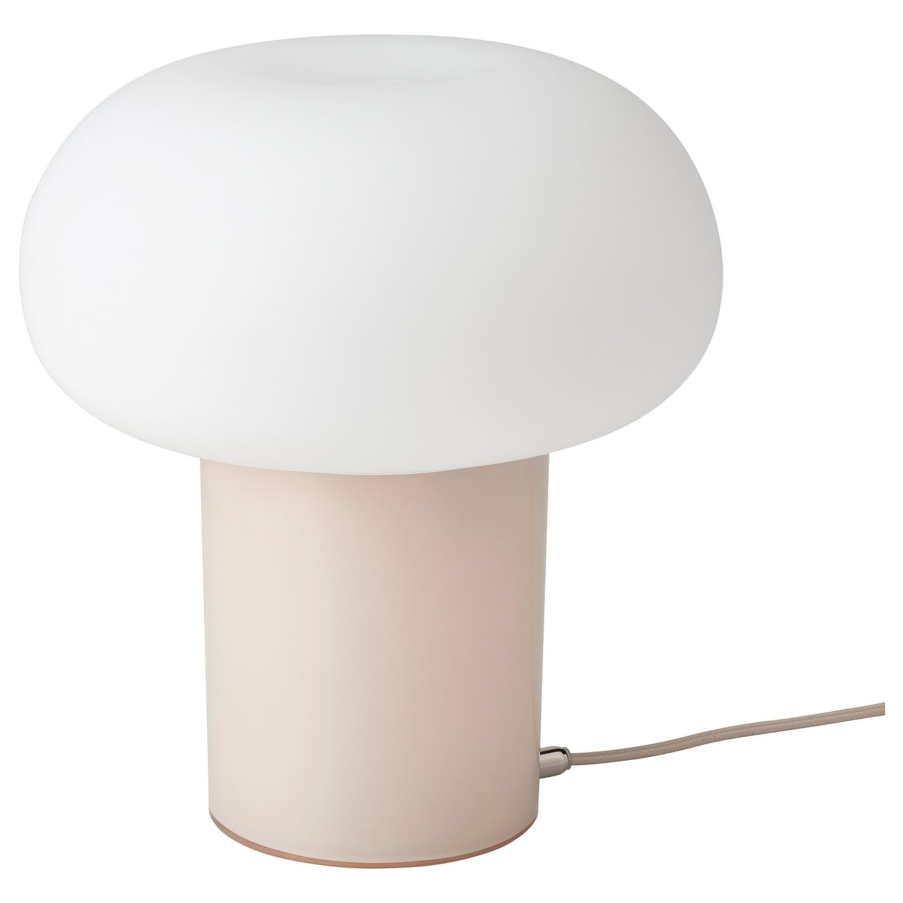
IKEA DEJSA 데이사 탁상스탠드
베이지 / 오팔 화이트 유리
49,900원패브릭 갓과 나무 기둥 대신 유리의 은은한 광택을 넣는 침실등. 베이지 유리 받침과 유백색 갓이라 낮은 흰 침대 옆에서도 차갑지 않습니다. 가격은 낮추되 유리 소재의 질감은 가져가는 대안입니다.
제품 상세 ↗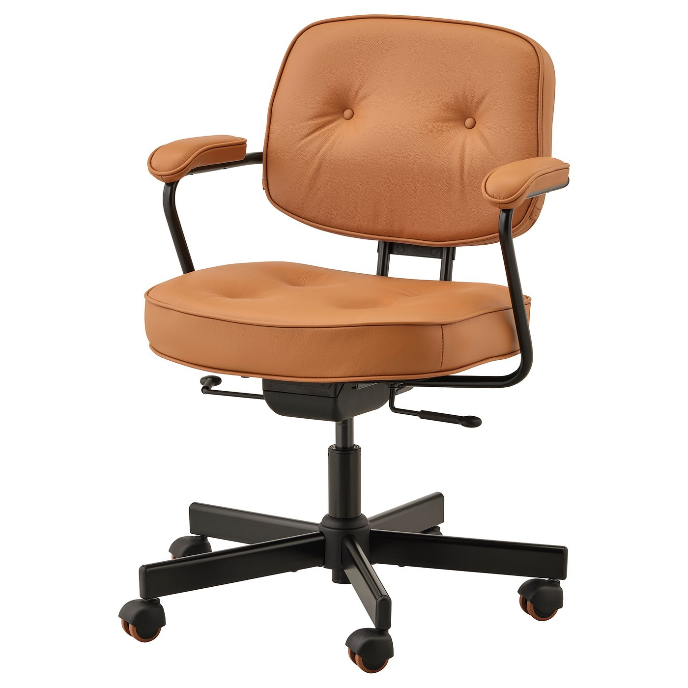
IKEA 알레피엘
그란 골드브라운 · 204.199.83
299,000원카라멜 탄 가죽과 검은 철제 프레임. 낮은 등받이가 창가를 덜 가리고, 이미 가진 화이트 책상에 따뜻한 색을 더한다.
제품 상세 ↗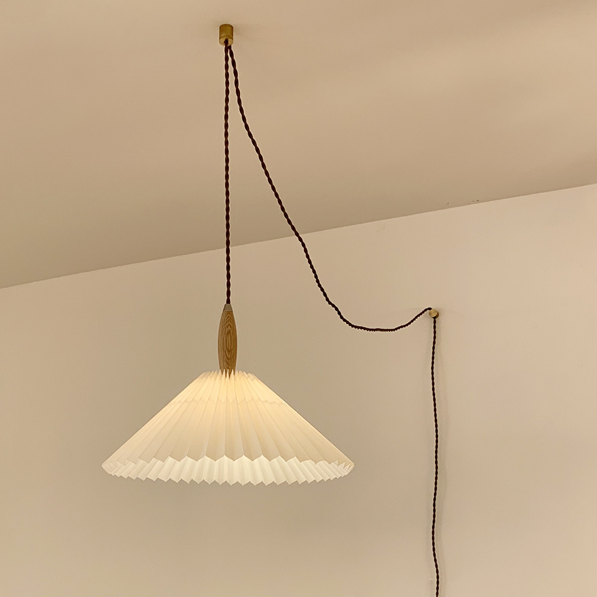
코램프 플리츠 펜던트 고정홀더형 40cm
4m 기본선 + 8W LED 전구 3000K 1개
203,000원기존 작은 갓보다 2m 식탁에 비례가 맞는 40cm 갓. 오크 원목 소켓과 주름진 패브릭이 부드러운 빈티지 분위기를 만듭니다. 플러그형 완제품이라 전기 배선을 새로 연결할 필요가 없습니다.
제품 상세 ↗
바우미스트 리베 원목 콘솔 900
리베900 / 네츄럴
65,600원상세 사진의 네츄럴은 노란 꿀빛에 가깝고 옹이·나뭇결이 뚜렷함. 화이트 대신 온기를 주되 고급 오크 가구와 같은 균일한 결은 아님.
제품 상세 ↗
나누벨 베르 고무나무 서랍형 협탁
내추럴 / 폭 40 × 깊이 32 × 높이 50cm / 1개
62,800원밝은 고무나무와 손잡이를 드러내지 않은 서랍으로, 작은 침실에도 형태가 단정해요. 위 서랍에 자잘한 물건을 숨기고 아래에는 책을 둘 수 있어 기존 메탈 협탁의 수납형 대안으로 골랐어요.
제품 상세 ↗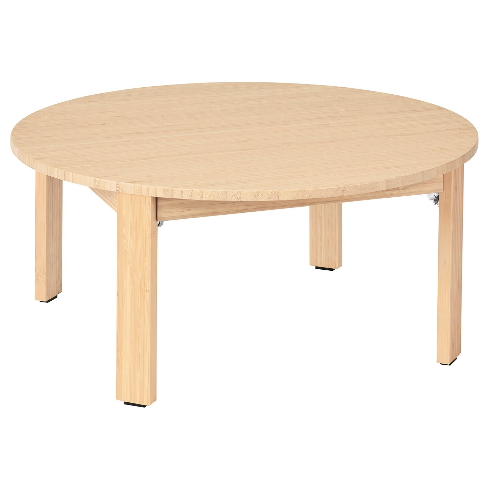
IKEA MOXBODA 목스보다
접이식 대나무 · 지름70×높이30cm
69,900원밝은 대나무 결과 둥근 70cm 상판으로 바닥을 덜 막는다. 높이30cm라 방석에 앉는 생활에 맞고 접어서 치울 수 있다.
제품 상세 ↗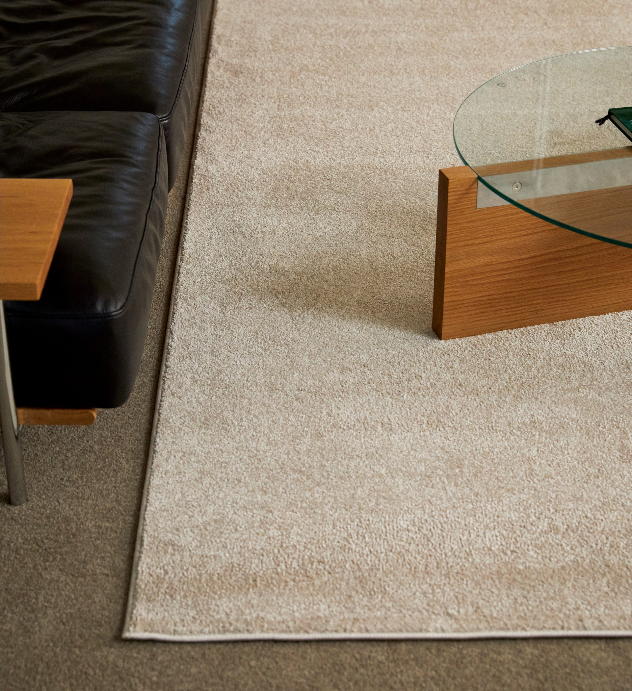
이씨라메종 올리 워셔블 러그
베이지 · 오리지널 타입 · 150×200cm
155,400원부드러운 베이지와 잔잔한 파일 질감으로 바닥을 차분하게 정리한다. 조명과 원목 가구가 주인공인 구성에 더 잘 맞는다.
제품 상세 ↗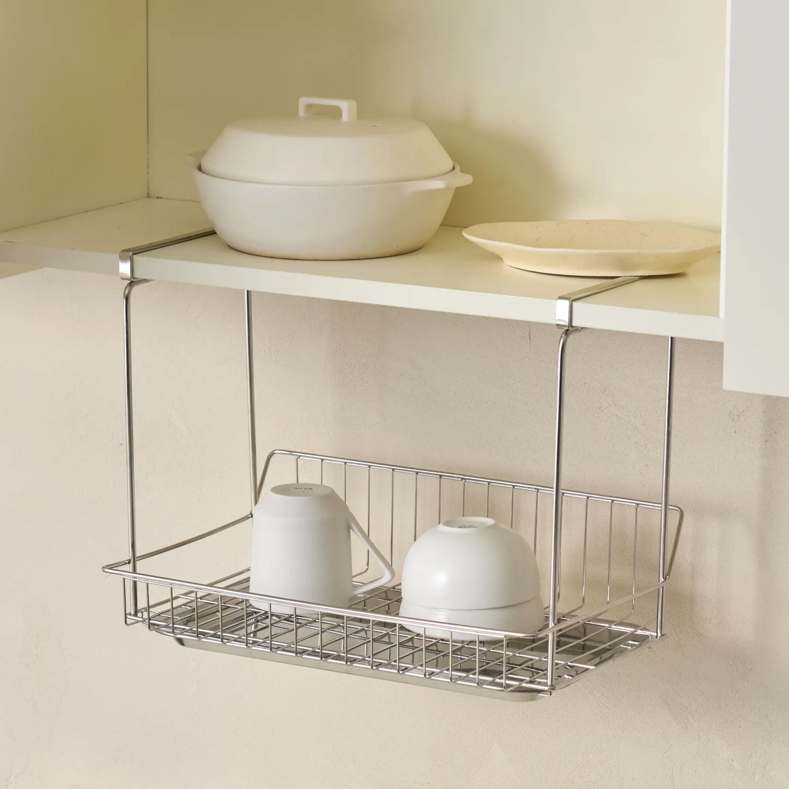
무표 304 스테인리스 행잉 식기건조대
상부장 클립형 40×26.5×32.5cm · 분리 물받이 포함
37,900원얇은 스테인리스 선으로 상판을 비우는 40cm 공중형 건조대입니다. 물받이를 앞으로 빼서 씻을 수 있어 물이 조리대에 떨어지는 것을 줄입니다.
제품 상세 ↗좌식 세트를 함께 두면
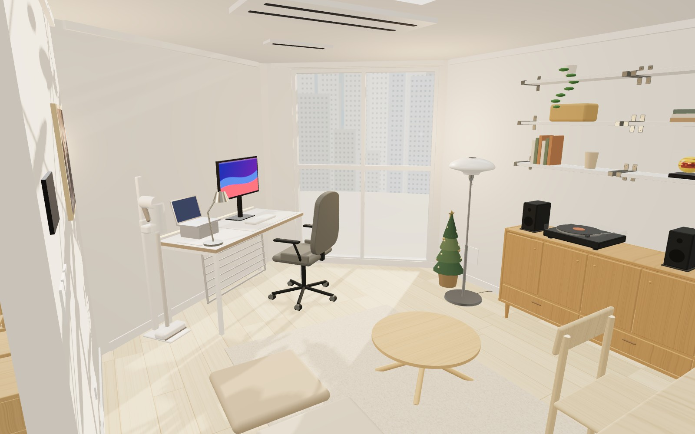
선택 옵션 · 러그·좌탁·방석을 켠 D안 보기 ↗전체 38개 역할별 내역
표시 가격은 카드에 정한 수량 전체 금액입니다. 예: 의자2개·거울8장. 배송 미확정은 무료가 아닙니다. 2026-10-27~28 조사 자료 기준, 주문 시 변동 가능.
| 제품·선택 옵션 | 상품 합계 | 배송 |
|---|
| 코램프 플리츠 펜던트 고정홀더형 40cm4m 기본선 + 8W LED 전구 3000K 1개 | 203,000원 | 0원 |
| IKEA TÄLLBYN 텔뷘 플로어스탠드니켈 도금 / 오팔 화이트 유리 | 149,000원 | 미확정 |
| IKEA DEJSA 데이사 탁상스탠드베이지 / 오팔 화이트 유리 | 49,900원 | 미확정 |
| Tapo P100M · 2팩 + 1팩한국용10A / 총3개 | 41,600원 | 미확정 |
| IKEA LISABO 리사보 200물푸레무늬목 · 200×78×74cm · 테이블 단품 | 349,000원 | 미확정 |
| IKEA LISABO 리사보 의자물푸레나무 / 804.572.36 | 159,800원 | 미확정 |
| IKEA 알레피엘그란 골드브라운 · 204.199.83 | 299,000원 | 미확정 |
| 장미맨숀 리브 원목 사이드보드 011400 / 내추럴 | 406,000원 | 30,000원 |
| IKEA BERGSHULT / GRANHULT 2열3단화이트 선반80×20cm 6장 + 니켈도금 브래킷2개입 6팩(총12개) | 155,400원 | 미확정 |
| TEAC TN-180BTTN-180BT Black | 320,000원 | 0원 |
| Edifier MR3 국내 정발블랙 | 109,000원 | 0원 |
| 바우미스트 리베 원목 콘솔 900리베900 / 네츄럴 | 65,600원 | 0원 |
| 바우미스트 하제 원목스툴샤벨 / 밝은 꿀빛 소나무 | 31,900원 | 3,300원 |
| 플래니스트 스킨답서스 수경재배 식물+심플화병스킨답서스+심플화병 | 14,500원 | 4,000원 |
| 티에라선인장 용신목 군생 선인장L 통통 멕시코 반려선인장 - 화이트마블토분화이트 마블 토분 (받침 불포함) | 24,000원 | 4,000원 |
| 노비타 슬림 컴팩트 BD-ECS3-01SB화이트 · 일반형 · 방문설치(현장결제) | 189,000원 | 0원 |
| 청호나이스 Compact WP-10C6500N화이트 · 무전원 정수 전용 · 구매 | 240,000원 | 0원 |
| 무표 304 스테인리스 행잉 식기건조대상부장 클립형 40×26.5×32.5cm · 분리 물받이 포함 | 37,900원 | 0원 |
| IKEA EKOLN 에콜른 물비누통베이지 · 300ml · 304.930.05 | 7,900원 | 미확정 |
| IKEA SKOLÄST 스콜레스트 싱크통길이 연장형 · 205.610.14 | 3,900원 | 미확정 |
| IKEA FASCINERA 파시네라 도마아카시아 · 28×19cm · 805.033.61 | 9,900원 | 미확정 |
| IKEA ORDNING 오르드닝 조리용품통스테인리스 · 높이 18cm · 801.795.79 | 5,900원 | 미확정 |
| 위닉스 뽀송 12L 제습기DXAE120-NEK · 화이트/카밍베이지 | 229,000원 | 0원 |
| IKEA JÄLL 옐 실내외 건조대화이트 · 002.428.91 | 10,000원 | 미확정 |
| 웰렉스 접이식 도어행거1단 43cm · 화이트 | 20,000원 | 3,000원 |
| 루메나 FAN PRIME 3모던 베이지 | 59,900원 | 0원 |
| 이씨라메종 올리 워셔블 러그베이지 · 오리지널 타입 · 150×200cm | 155,400원 | 0원 |
| 데코뷰 베이지 린넨 빵빵이 대방석솜일체형 60×60×8cm · 베이지 2개 | 63,800원 | 0원 |
| IKEA MOXBODA 목스보다접이식 대나무 · 지름70×높이30cm | 69,900원 | 미확정 |
| 올플로어 피너스 원목 침대 깔판기본 2단 접이식 Q150 · 내추럴 | 75,100원 | 0원 |
| IKEA DVALA 드발라 매트리스커버화이트150×200 · 최대 매트리스 두께26cm | 23,900원 | 미확정 |
| IKEA SILVERLÖNN 실벨뢴 속커튼화이트145×250 · 한쌍2장 구성 ×2세트 | 59,800원 | 미확정 |
| 나누벨 베르 고무나무 서랍형 협탁내추럴 / 폭 40 × 깊이 32 × 높이 50cm / 1개 | 62,800원 | 5,000원 |
| 서운아트 브라운 원목 원형 벽거울지름50cm · 브라운 | 59,000원 | 0원 |
| 엘로몽키 아크릴 사각 거울30×30cm8장 · 문마다4장 이어30×120 구성 | 36,000원 | 3,000원 |
| IKEA RÖDALM 뢰달름 액자참나무무늬40×50cm ×2개 · 이미지 인화 별도 | 39,800원 | 미확정 |
| 스튜디오투명 LP거치대 DST012투명 · 탁상 조립형1개 | 10,900원 | 2,500원 |
| IKEA SALUDING 살루딩 빨래바구니핸드메이드 대나무 · 50L · 내부 세탁물 주머니 포함 | 54,900원 | 미확정 |
다른 후보와 비교하기 ↗